| 日付 | 2021年10月2日（土） - 2021年10月3日（日） | ||||
|---|---|---|---|---|---|
| 山域 | 東北の山 | ||||
| メンバー | 家族（妻、長女・10歳、長男・8歳） | ||||
| 山行形態 | 子連れ日帰り | ||||
| アクセス | 車 | ||||
| ルート (Map1) |
|
7年振りに紅葉の安達太良山を訪れることにする。
前回訪問時は大混雑で少々懲りたのだが、
どこかの山で、安達太良山の北にある箕輪山辺りは静かでよい場所、
ということを教えてもらい、それ以来計画を温めていた。
天候や息子の予定などで、今年は行けないかもと思っていたが
幸いタイミングよく行く機会を得ることができた。
1日目
安達太良山は明日登る予定で、本日は軽く散策。
未踏の吾妻小富士に行ってみることにする。
混雑する浄土平の駐車場に車を停める。標高1600m。
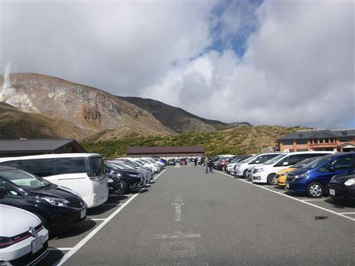
目指す吾妻小富士が横たわっている。
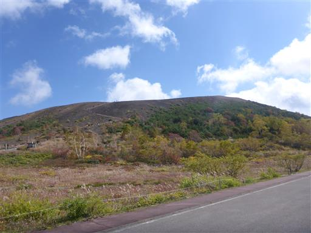
早速登山開始。きれいな階段が設置されている。
今年の春に整備されたものだろう。
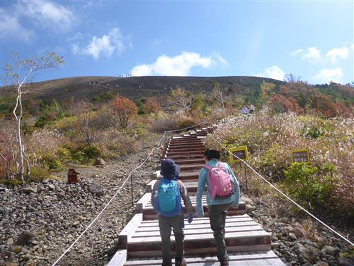
周囲は紅葉が美しい。
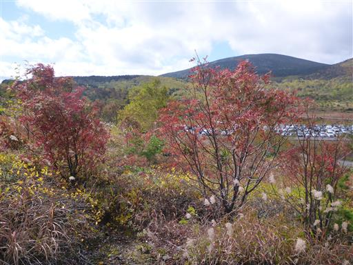
滑りにくくするためかもしれないが、階段は凸凹していて非常に歩きにくい。
娘が歩いている縁の方がまだ歩きやすい。
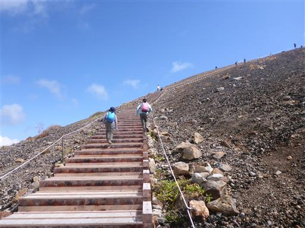
吾妻小富士の火口縁に到着。
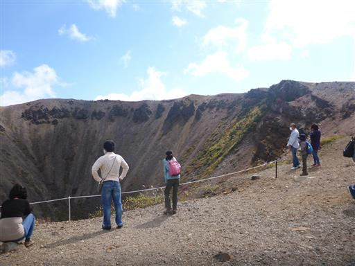
眼下に巨大な噴火口が見える。山の規模に似つかわしくない巨大な穴だ。
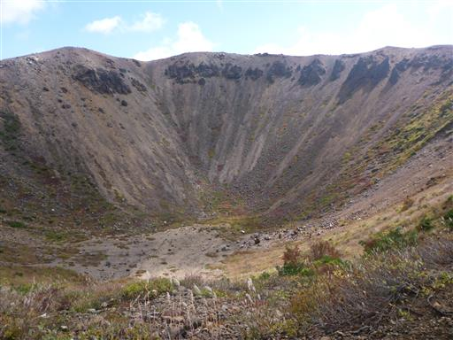
13年前に来た時はここまでで、時間の都合で一周できなかった。
ようやく吾妻小富士を一周できる。
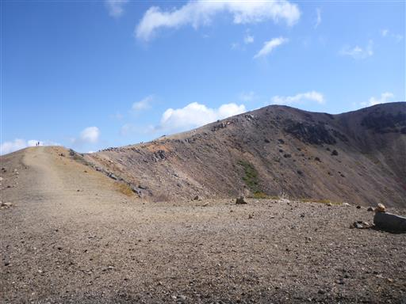
本日はとにかく風が強い。風が強いときは皆しゃがんでいる。
昨日台風が通過したので、その影響が残っている。
歩けないほどではないが、大人でもよろけることがある。
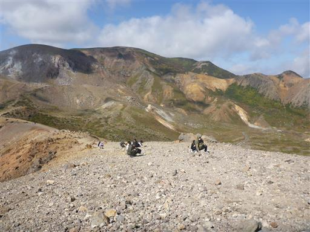
山頂と思われる場所に到着。標高1707m。
隣のピークの方が高いかもしれないが、山頂標識がないので分からない。
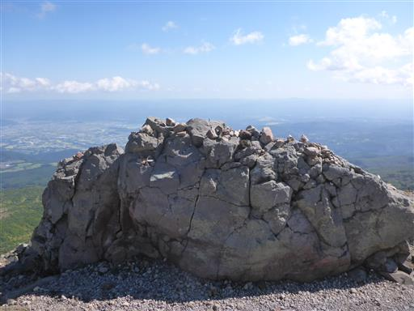
福島の街が見渡せる。風が強い分、雲がどんどん流れていき、展望は抜群だ。
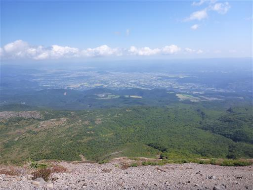
噴火時に流出した溶岩だろうか？あちらこちらで、ごつごつした岩が見られる。
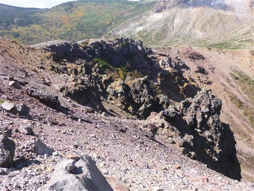
眼下の黄葉がきれいだ。左に見えるのは以前登った東吾妻山。
紅葉の中に遊歩道が見えたため、後で行ってみることにする。
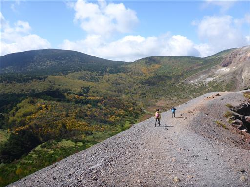
山頂部を振り返る。こうやって見ると立派な山だ。
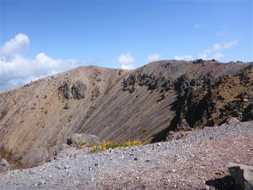
背景は今も活発な火山活動を続ける一切経山。
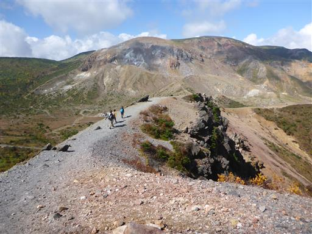
火口を一周し、下山道に入るとようやく風が少し落ち着く。
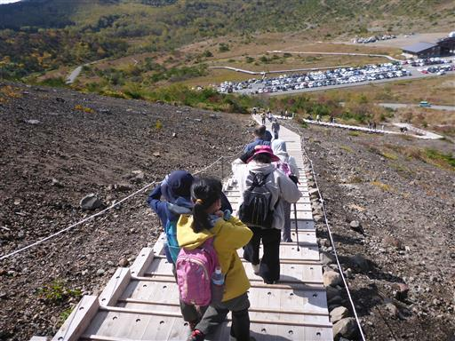
吾妻小富士を下山したら車道を歩いて遊歩道入口を探す。
この辺りは紅葉真っ盛りだ。
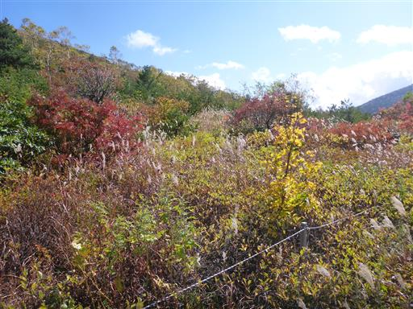
紅葉に彩られた車道を歩く。
車通りが多いのが少し落ち着かないが、景色は最高だ。
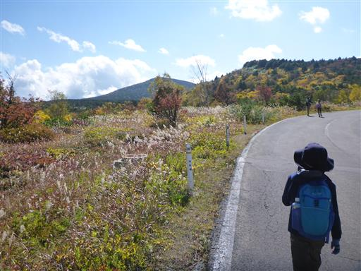
遊歩道入口に到着。
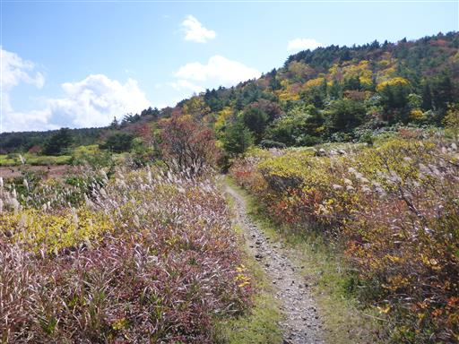
真っ赤な草紅葉
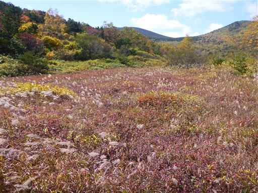
しばらく進むと樹林帯の中の道になる。
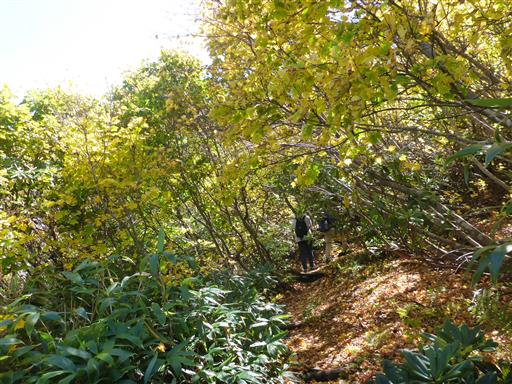
桶沼に到着。ここも噴火口跡だ。吾妻小富士とは異なり、こちらは水を湛えている。
水深は13mで、この辺りの池の中では一番深いようだ。
ベンチがあるのでここで昼食をとる。
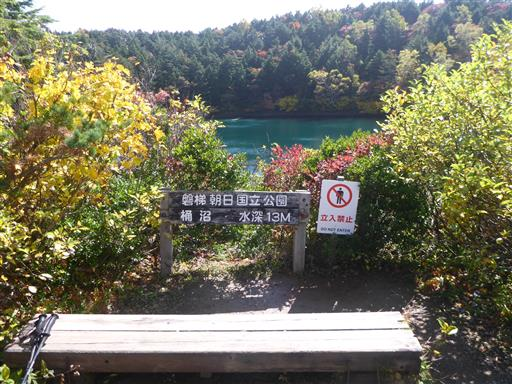
赤い実が青空によく栄える。ナナカマドだろうか？
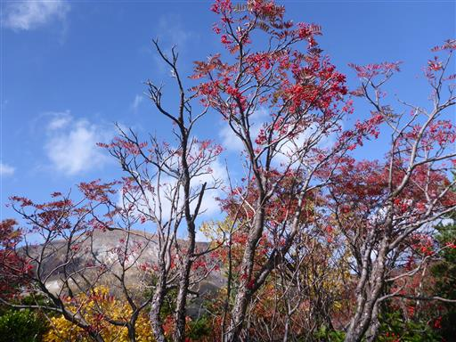
昼食後に少し先まで歩いてみると、よりよく桶沼が展望できる場所に到着する。
こちらで昼食をとればよかった。
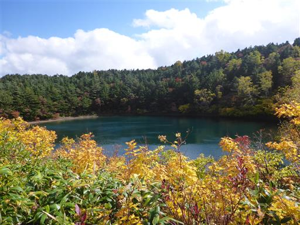
桶沼を離れ、浄土平に設けられた木道を歩いて駐車場に戻る。
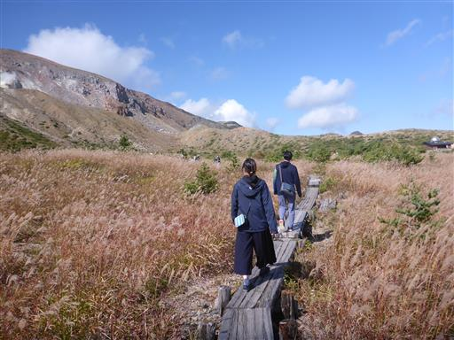
この辺りはススキが美しい。背景は先ほど登った吾妻小富士だ。
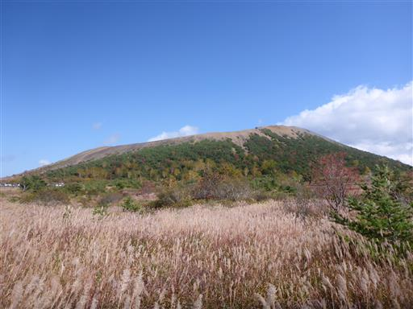
苔のように見えるがこれは何だろう？きれいに紅葉している。
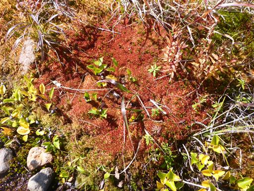
駐車場に戻ってくる。
1時間半程度の散策だったが、吾妻小富士からの展望や、素晴らしい紅葉を楽しむことができた。
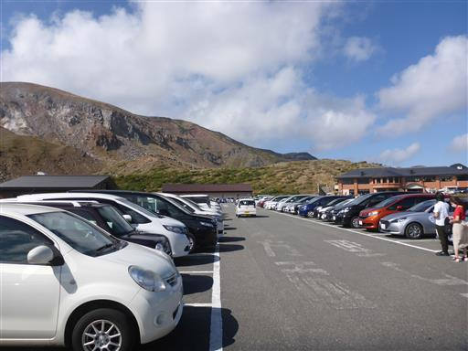
帰りの車移動で、展望の良い場所が所々にあったので、車を停めて景色を眺める。
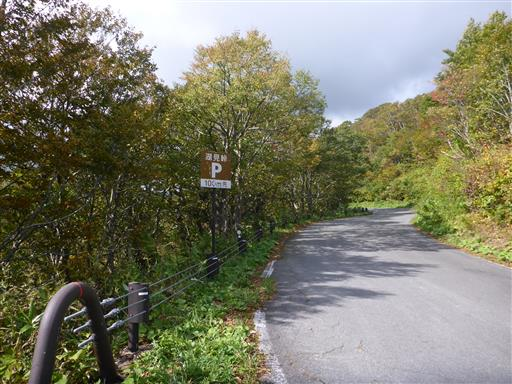
会津のシンボル・磐梯山。
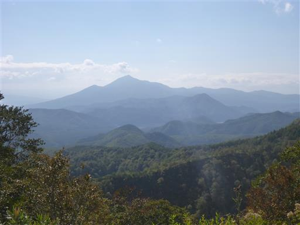
明日登る予定の安達太良山。
左から鬼面山、箕輪山、鉄山と続いている。まさに明日歩くルートが一望だ。
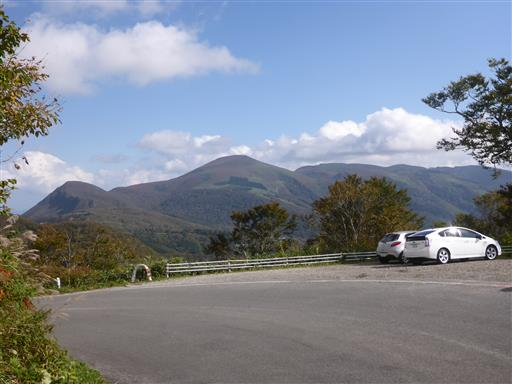
本日宿泊のあだたらさくらキャンプ場に到着する。
キャンプ場はかなり賑わっている。
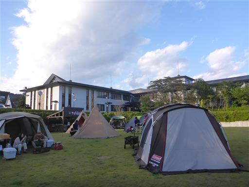
今回は手抜きキャンプ。夕食は「ピザ屋ミンズヤード」のピザをテイクアウトで。
美味しいピザを食べたら、8時半に就寝。
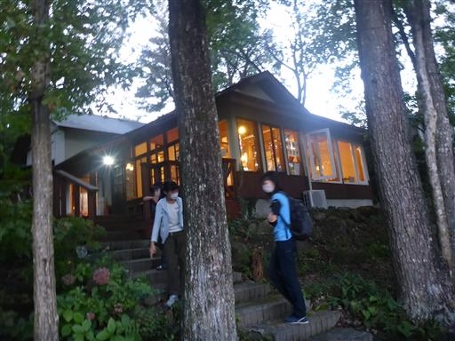